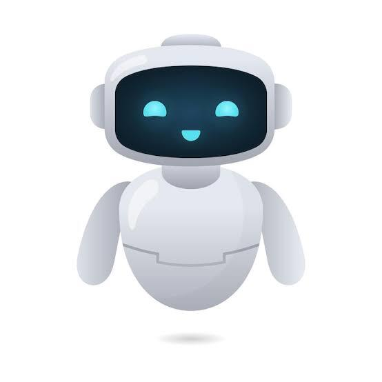

서비스 소개
어디에 물어야 할지 몰라 헤매지 않도록
신입생은 수강신청 기간, 서류 발급 방법, 시설 이용 시간처럼 사소하지만 급한 것을 자주 궁금해합니다. 공지사항은 여기저기 흩어져 있고 학과 사무실은 점심시간에 닫습니다. 물어봇은 학교 공지와 학사 규정을 대신 찾아 답해 주는 안내 챗봇입니다.

서비스 정보
서비스 소개
물어봇은 24시간 답변하며, 학교 공지와 학사 규정에서 근거를 찾아 평소 말투로 한 질문에도 알려 줍니다.
이용 방법
궁금한 점을 평소 말투로 입력하면 물어봇이 관련 공지를 찾아 답변을 보여 줍니다.
자주 묻는 질문
물어봇의 답변이 최종 결정인가요? 아니요, 정확한 내용은 담당 부서에서 한 번 더 확인해야 합니다.
물어봇 이용 설정
화면 테마
0 / 10
안내 확인 후 물어봇을 시작할 수 있습니다.
물어봇에게 질문하기
1 / 3 · 질문 작성
질문 작성
평소 말투로 적어 주세요. 예: 수강신청 정정 기간이 언제예요?
질문 분야 선택
기타 질문은 답변 근거를 찾지 못하면 담당 부서 연락처로 안내됩니다.
질문 내용 확인
- 이름
- 질문 분야
- 궁금한 점
질문이 접수되었습니다
물어봇이 관련 공지를 찾아 답변을 보여 드립니다. 더 확인할 내용은 담당 부서 연락처로 안내합니다.
이용 방법
- 궁금한 점을 평소 말투 그대로 입력합니다.
- 물어봇이 관련 공지를 찾아 답변을 보여 줍니다.
- 더 확인할 내용은 담당 부서 연락처로 이어집니다.
사전 신청
3월 정식 공개 전에 먼저 사용해 볼 수 있습니다.